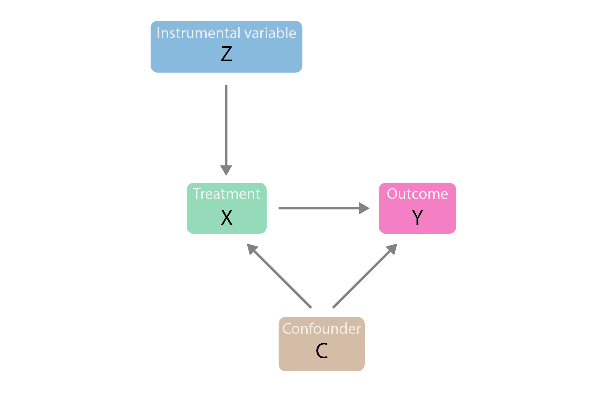

Instrument Variable
category_specifier : "Causal Inference"
Reference Docs: Omitted Variable Bias | Endogeneity and Exogeneity
Motivation
💡I can’t run an experiment, but I want to know the causal effect.
- You lack a clean A/B test or random assignment.
- You suspect non-random selection into treatment.
- IV is a method born out of necessity - when experiments aren’t feasible and OLS is unreliable, IV becomes a powerful tool for credible causal inference.
The IV Solution
IV introduces a third variable (Z), the instrument, which:
- Is correlated with X (relevance) :
- Is not directly correlated with Y (exogeneity) :
This allows you to use only the part of X that is “as good as random” (driven by Z), isolating a causal estimate of \(\beta_1\).
When Do We Use IV?
Use IV when you suspect the explanatory variable (X) is correlated with the error term (e) in your model:
This breaks the OLS assumption and leads to biased estimates.
Visual Representation
In a causal graph:

- Z → X → Y
- Z → X must exist (relevance)
- Z → Y directly (exogeneity)
TSLS: Two-Stage Least Squares
A common IV estimation technique:
- First Stage:
Regress X on Z:
\(X = \pi_0 + \pi_1 Z + u\)
Use predicted \(\hat{X}\)
- Second Stage:
Regress Y on \(\hat{X}\)
\(Y = \beta_0 + \beta_1 \hat{X} + \epsilon\)
The estimated \(\beta_1\) is now unbiased, assuming instrument validity.
Examples & Use Cases
- Demand estimation: Use weather shocks or tax variation to instrument for prices.
- Crime and incarceration: Use prison overcrowding litigation as an instrument.
- Class size and student performance: Use earthquake-driven classroom reallocations.
- Birth weight and smoking: Use state-level cigarette prices as an instrument for maternal smoking.
Testing for Validity
- Relevance: Look at F-stat in the first stage. Rule of thumb: F > 10 is strong.
- Exogeneity: Testable only if you have more instruments than endogenous variables using the J-test (Sargan test).
Generalizations
- Can include multiple instruments and control variables.
- Must ensure the model is at least exactly identified (number of instruments ≥ number of endogenous regressors).
- Weak instruments bias TSLS toward OLS - use with caution!
Software Notes
- In Python: Use
IV2SLSfromlinearmodels.iv - In R: Use
ivregfrom theAERpackage